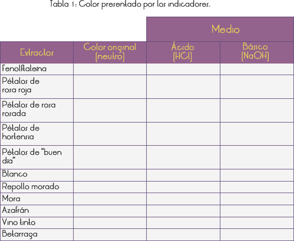

Introducción
En nuestro día a día existen sustancias que presentan sabor "agrio", (vinagre y jugo de limón) y otras que presentan sabor "astringente" – que produce escoriación en la lengua - plátano verde y caqui verde) Esos dos tipos de sabores caracterizan dos grandes grupos de sustancias: los ÁCIDOS y las BASES. Pero, por una cuestión de seguridad (no podemos probar sustancias desconocidas) y por los peligros consecuentes de esta acción (quemaduras, intoxicación y, en algunos casos, riesgo de vida), el método más utilizado es el examen con INDICADORES ÁCIDO-BASE.
Los indicadores ácido-base son sustancias que, debido a sus propiedades físico químicas, presentan la capacidad de cambiar de color delante de un ácido o una base, porque estas sustancias presentan comportamientos químicos opuestos.
Son utilizados para indicar el punto de equivalencia de una reacción (titulaciones) y/o para identificar el carácter ácido o básico de sustancias (como en la Parte II de nuestro experimento).
En general, los indicadores son moléculas orgánicas complejas. Los más comunes usados en laboratorio son artificiales (anaranjado de metilo, azul de bromotimol, etc), pero otros son extraídos de la naturaleza, como el tornasol, obtenido a partir de líquenes, por fermentación alcalina. El tornasol presenta el punto de virada muy próximo al PH 7 siendo, por tanto de gran utilidad par indicar fácilmente o carácter ácido o básico de soluciones.
Objetivo
Analizar el carácter ácido/básico de algunas sustancias que usamos a diario
PARTE I: PRODUCIENDO INDICADORES
- Fenolftaleína
1) Colocar ¼ de píldora del remedio elegido en el mortero y molerlo.
2) Agregar 100 ml. de alcohol y revolver con la vara de vidrio.
3) Colocar el embudo en la boca de un matraz erlenmeyer, filtrar la mezcla y pasarla para un frasco de conserva.
4) Anotar el color original de la solución en la Tabla 1 y rotular el vidrio – Fenolftaleína.
- Indicadores de vegetales, flores y frutas
- Papel indicador
1) Cortar en pedazos pequeños una porción de los siguientes materiales: pétalos de rosa roja, pétalos de rosa color rosado, pétalos del "buen día" blanco (Impatiens), pétalos de hortensia y mora.
2) Machacar, separadamente, cada muestra con ayuda del bastón del mortero en vasos tipo americano.
3) Agregar aproximadamente 100 ml. de agua hirviendo en cada vaso y dejar en reposo por 5 minutos, revolviendo de vez en cuando.
4) Filtrar cada una de las soluciones obtenidas en las tazas rasas y anotar el color original correspondiente según la Tabla 1.
5) Cortar 15 tiras de papel absorbente con 0,5 cm. de ancho y 5 cm. de largo y sumergir cinco tiras en cada taza.
6) Dejar secar y guardar en frascos de conserva rotulando, respectivamente, con las etiquetas: papel repollo, papel betarraga y papel mora.
- Papel indicador obtenido del azafrán y del curry en polvo
1) Colocar 1 cuchara de medida llena de azafrán o curry en polvo en un vaso americano y agregar, aproximadamente, 100 ml. de alcohol.
2) Dejar descansar, anotar el color original en la Tabla 1 y hacer 5 tiras de papel azafrán como el de papel repollo (5 y 6 del ítem B2).
- Vino tinto
1) Colocar 100 ml. de vino en un frasco de conserva, anotar el color original en la Tabla 1 y rotular como vino tinto.

PARTE II: INVESTIGANDO SUSTANCIAS DEL COTIDIANO
1) Para cada muestra testada utilizar 10 vasitos desechables rotulados, pues serán testados 10 indicadores.
2) En las muestras líquidas llenar el vasito hasta aproximadamente ¼ de su capacidad.
3) En las muestras sólidas cortar en pequeños pedacitos, amasar y colocar en el vasito.
4) Cuando el indicador sea líquido colocar 10 gotas en la muestra, y cuando sea sólido humedecer el papel en la muestra.
5) Observar el color que el indicador adquiere en cada muestra y anotar en las Tablas 2 y 2A.
6) El color original de cada indicador indica el medio neutro. La solución de ácido clorhídrico (HCl) y de hidróxido de sodio (NaOh) serán el padrón de referencia para la identificación del carácter ácido y básico, respectivamente, de cada muestra testada.
7) Para cada indicador, colocar en la Tabla 2, el color adquirido en contacto con la solución de HCl (medio ácido) y NaOH (medio básico).
PARTE III: SABOR
1. Preparar los vasitos incluidos en la tabla 3.
2. Mojar la punta del dedo en los vasitos 1, 2, 3 y 5, probar
3. Anotar el sabor correspondiente a cada sustancia examinada en la Tabla.
4. Comer el contenido del recipiente 4 y anotar el sabor en la tabla.
RESULTADOS Y CONCLUSIONES
En nuestra vida diaria encontramos muchos indicadores: en flores, especies vegetales y frutas; en los especieros de la cocina de nuestra casa y de los supermercados, como por ejemplo, el azafrán.
Usando los indicadores producidos en la Parte I y, analizando la Tabla 2 y 2A, nos damos cuenta, claramente, que los materiales examinados pueden ser divididos en dos grandes grupos, de acuerdo con sus efectos sobre los indicadores (observe la alteración de los colores):
 Grupo de HCI (ácidos); vinagre, jugo de limón, sprite, manzana.
Grupo de HCI (ácidos); vinagre, jugo de limón, sprite, manzana. Grupo de NaOH (bases): leche de magnesio, detergente líquido con amoniaco, solución de detergente en polvo.
Grupo de NaOH (bases): leche de magnesio, detergente líquido con amoniaco, solución de detergente en polvo.
Entre las sustancias examinadas con indicador, solamente podemos probar por el sabor; jugo de limón, vinagre, sprite, manzana y leche de magnesio. Al probar los cuatro primeros, podemos sentir el sabor agrio característico de los ácidos y, al probar la leche de magnesio, podemos sentir el sabor astringente, característico de las bases.
Hay sustancias que no se encajan en estos dos grupos analizados, son las neutras, como por ejemplo, sal de cocina, azúcar, etc.
Basados en lo hechos estudiados en este experimento, podemos llevar a los alumnos a elaborar definiciones operacionales de ácido y bases, fundamentadas apenas en lo que fue realizado experimentalmente, sin utilizar ningún concepto o teoría anteriormente estudiada.
Ejemplo:
 Ácidos son sustancias que presentan sabor agrio y enrojecen el papel del repollo rojo.
Ácidos son sustancias que presentan sabor agrio y enrojecen el papel del repollo rojo.
 Bases son sustancias que presentan sabor astringente y hacen verdoso el papel del repollo morado.
Bases son sustancias que presentan sabor astringente y hacen verdoso el papel del repollo morado.